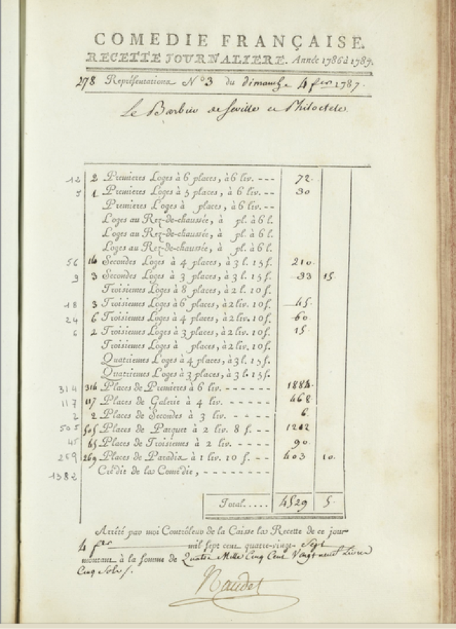

Mais le 4 février 1787, la même saison donc que notre soirée du 15 octobre, le registre des recettes indique que le Barbier fut joué en premier suivi de Philoctète, pour une autre soirée à succès. Faut-il mettre cela sur le compte d’une négligence de celui qui était en charge de tenir les registres? Quelques mois plus tard, le 14 novembre 1787, un autre registre signé par Naudet, indique cette fois que le Philoctète fut joué en premier suivi de la pièce de Beaumarchais.
